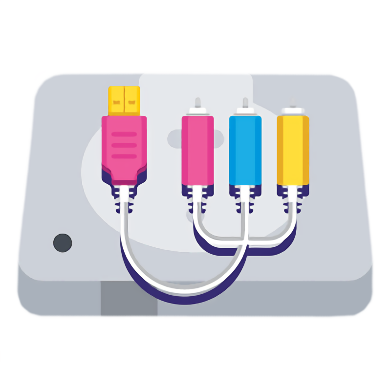
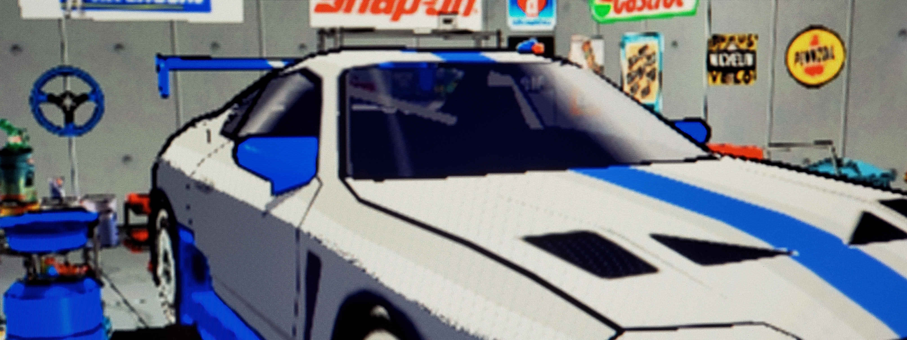

DisplayStation
Further Reading
Still curious about upscalers and console graphics? This is the place for you.
Links
Everything you could need to know about converting analogue video signals.
Deinterlacing+Scaling+ProcessingWhat is 240p and how do modern TVs interpret it.
HD Retrovision - 240pWhy component video looks better than composite.
HD Retrovision - Behind the Pixels